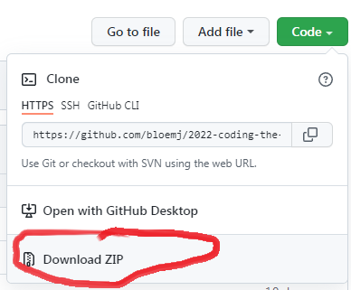
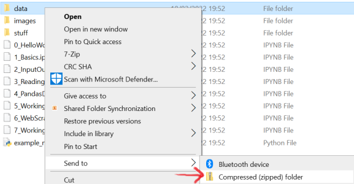

Reading and writing files, JSON
Contents
Reading and writing files, JSON#
Contents:#
File Input/Output
Reading and writing JSON
File Input/Output#
A huge portion of our input data will come from files that we have stored on our computer (on the file system). A lot of analysis of these files is done in memory in Python, when working with them. We have to save them back to the file system to store the results. So, mastering the art of reading and writing is crucial in programming.
Until now, we have run stuff (almost instantly) in our Jupyter Notebooks, but imagine that we write code that takes a couple of ours to run on a large collection of files. Then we want to save the result, either for further analysis, or to make these files available (i.e. sharing) in your research.
Files in Colab (repeated from notebook 2)#
In these examples, we will work with a file referred to as “data/adams-hhgttg.txt”. This means there should be a directory called “Data” and inside of that there should be the file “adams-hhgttg.txt”. You will find this in the course repository in the Notebooks directory. Obtain this file either by downloading the course repository and finding it there, or opening it on Github and saving the raw file.
In Colab, you can view and edit the file system by clicking on the “Files” icon on the left side. You will see the file system of your Colab session there with a directory called “sample_data”. You can make directories and upload files here.
Normally, you cannot upload a directory full of files, but there is a trick, which we will use here: you can upload zip files (containing multiple files and directories) and then unzip them.
Find the “data” directory in the repository that you downloaded, and compress (zip) it.
On Windows, this is unintuitively done by sending it to a compressed folder:
On Apple, it is done by right-clicking on “folder name” and choosing the option ‘Compress “folder name”’
Then, in Colab’s Files window, click “Upload to session storage” and upload your new zip file.
Next, you can unzip it by running this code:
!unzip data.zip
unzip: cannot find or open data.zip, data.zip.zip or data.zip.ZIP.
(This assumes your file is named data.zip, change the command if not)
Now, you will have the directory with the data files of the course in your Colab session, but Colab doesn’t always show the change immediately. If you do not see it yet, click the “Refresh” button (next to the Upload to session storage button) to show the change you just made. You should now have a directory called “Data” in your session and inside of that there should be the file “adams-hhgttg.txt”, among other files.
Note
Colab sessions are temporary - the next time you load Colab to work on this notebook, you will have to upload your Data zip file and unzip it again.
Manually creating folders and files#
Besides the “sample_data” and “data” that you now have, you can make another directory by right-clicking somewhere in this file system window and choosing “New folder”. For example, create a folder called Stuff for your code’s output.
Permanently saving your files: Google Drive#
There is also a more permanent solution, which is to link your Google Drive to your Colab session. You can do it by clicking the “Mount Drive” button in the Files window, or with this code:
from google.colab import drive
drive.mount('/content/drive')
---------------------------------------------------------------------------
ModuleNotFoundError Traceback (most recent call last)
Input In [2], in <cell line: 1>()
----> 1 from google.colab import drive
2 drive.mount('/content/drive')
ModuleNotFoundError: No module named 'google.colab'
In the Files window, you will now see an additional directory called Drive. In this directory will be the contents of your Google Drive. If you put your data there, for example in a directory called “data”, you will be able to access this from Colab. It will be located on the path drive/data/file.txt. Anything you put on Google Drive will still be there next time you open Colab, as long as you link your session to Google Drive again.
Opening a file#
The following code opens a file in our filesystem, prints the first 10 lines and closes the file. Please note that this file must exist in your Colab session (when running on Colab) on your computer (when running locally).
If you are working locally and you have only have downloaded this notebook, go back to the repository and download the file to the appropriate path (or change the path below).
Tip
The code below shows you how the open() function works. It’s better to use a with block (see below), which does this opening and closing for you.
infile = open('data/adams-hhgttg.txt', 'r', encoding='utf-8')
#If you have put the file somewhere else, such as on your Drive, you should modify the path to open.
#For example to '/drive/data/adams-hhgttg.txt'. Otherwise, you will get a FileNotFound error when running this code.
for i, line in enumerate(infile):
if i == 10:
break
print(line)
infile.close()
The Hitch Hiker's Guide to the Galaxy
for Jonny Brock and Clare Gorst
and all other Arlingtoniansfor tea, sympathy, and a sofa
Far out in the uncharted backwaters of the unfashionable end of
the western spiral arm of the Galaxy lies a small unregarded
yellow sun.
The key passage here is the one in which the open() function opens a file and return a file object (hint: try printing the type of infile), and it is commonly used with the following three parameters: the name of the file that we want to open, the mode and the encoding.
filename: the name of the file to open, this corresponds to the full/relative path to the file from the notebook.
the mode in which we want to open a file: the most commonly used values are
rfor reading (default, which means that you don’t have to put this in explicitly),wfor writing (overwriting existing files), andafor appending. (Note that the documentation report mode values that may be necessary in some exceptional case)encoding: which mapping of string to code points (conversion to bytes) to use, more on this later.
Warning
Every opened file should be closed by using the function close() before the end of the program, or the file could be unavailable to successive manipulations or for other programs.
There are other ways to read a text file, among which the use of the methods read() and readlines(), that would simplify the above function in:
infile = open('data/adams-hhgttg.txt', 'r', encoding='utf-8')
text = infile.readlines()
print(text[:10])
infile.close()
However, these methods read the whole file at once, thus creating capacity/efficiency problems when working with big corpora.
In the solution we adopt here the input file is read line by line, so that at any given moment only one line of text is loaded into memory.
You can see all file object methods, including examples, on this W3schools page: https://www.w3schools.com/python/python_ref_file.asp
The with statement#
A with statement is used to wrap the execution of a block of code.
Using this construction to open files has three major advantages:
there is no need to explicitly close the file (the file is automatically closed as soon as the nested code exits)
the file is closed automatically even when unhandled errors cause the program to crash
the code is way clearer (it is trivial to identify where in the code a file is opened)
Thus, you can make it yourself a bit easier. Forget about the explicit .close() method. The code above can be rewritten as follows:
with open('data/adams-hhgttg.txt', encoding='utf-8') as infile: # The file is opened
lines = infile.readlines()
# As soon as we exit the indented scope, the file is closed again
# (and made available to other programs on your computer)
print(lines[:10])
["The Hitch Hiker's Guide to the Galaxy \n", '\n', 'for Jonny Brock and Clare Gorst \n', 'and all other Arlingtoniansfor tea, sympathy, and a sofa\n', '\n', '\n', '\n', 'Far out in the uncharted backwaters of the unfashionable end of\n', 'the western spiral arm of the Galaxy lies a small unregarded\n', 'yellow sun.\n']
The code in the indented with block is executed while the file is opened. It is automatically closed as the block is closed.
Tokenization: Making sense of text files#
When working in Media Studies or Linguistics, files that you want to process will very often be text files. We will learn more about this in notebook 5, but since we are already reading text files, here are a few basics.
Python considers strings similar to a sequence of characters. However, as humans, we usually prefer to think of them as a sequence of words or sentences. The task of transforming a sequence of characters into a list of words (or other larger chunks) is called tokenization.
Naively, we can say that words are delimited by spaces, and thus tokenize simply by splitting a string on spaces:
mytext = "A word is what is between spaces. That is all."
mytokens = mytext.split(" ")
mytokens
['A', 'word', 'is', 'what', 'is', 'between', 'spaces.', 'That', 'is', 'all.']
However, now we see that our list includes the word spaces., with a period, and all. This is not exactly what we want. If you try fancier things involving punctuation, you also get problems with emoticons :-( or acronyms (F.B.I.). What you should know for now is that other people have already tried to solve these problems, and you can use an existing tokenizer from the NLTK (Natural Language Toolkit) module. It works like this:
import nltk
mytext = "A word is what is between spaces. That is all."
mytokens_nltk = nltk.tokenize.word_tokenize(mytext)
mytokens_nltk
---------------------------------------------------------------------------
ModuleNotFoundError Traceback (most recent call last)
Input In [6], in <cell line: 1>()
----> 1 import nltk
2 mytext = "A word is what is between spaces. That is all."
3 mytokens_nltk = nltk.tokenize.word_tokenize(mytext)
ModuleNotFoundError: No module named 'nltk'
If you are using Google Colab and try to run this, you probably get an error saying that some elements of NLTK were not found. Run the code below to download them into your Colab session and try again. You only need to do this once per session.
If you are running Python on your laptop, you may have to install NLTK also, or download elements of it in the same way. You only need to do this once.
import nltk
nltk.download('punkt')
---------------------------------------------------------------------------
ModuleNotFoundError Traceback (most recent call last)
Input In [7], in <cell line: 1>()
----> 1 import nltk
2 nltk.download('punkt')
ModuleNotFoundError: No module named 'nltk'
We can also tokenize a text into sentences, as it is often useful to know which words are in the same sentence. This is easily done with NLTK also:
import nltk
mytext = "A word is what is between spaces. That is all."
mysenttokens_nltk = nltk.tokenize.sent_tokenize(mytext)
print("Sentences:")
print(mysenttokens_nltk)
print("Words:")
for sent in mysenttokens_nltk:
mytokens_nltk = nltk.tokenize.word_tokenize(sent)
print(mytokens_nltk)
---------------------------------------------------------------------------
ModuleNotFoundError Traceback (most recent call last)
Input In [8], in <cell line: 1>()
----> 1 import nltk
2 mytext = "A word is what is between spaces. That is all."
3 mysenttokens_nltk = nltk.tokenize.sent_tokenize(mytext)
ModuleNotFoundError: No module named 'nltk'
Note that we first tokenize by sentences and then by words here. Sentence tokenization returns a list of sentences (strings). However, the tokenize functions require strings, not lists. So, if we want to tokenize the sentences further into words, we need to loop through the list of sentences to tokenize each sentence separately.
In notebook 5, you will see more of what NLTK offers for working with text.
Quiz#
Tip
You can call .read() on the file object.
Write one function that takes a file path as argument and prints statistics about the file, giving:
The number of words (often called ‘tokens’)
The number of unique words (often called ‘types’)
The type:token ratio (i.e. unique words / words)
The 10 most frequent words, including their frequencies
Write a normalization or cleaning function that takes a string as argument, that pre-processes this text and returns a normalized version, by removing/substituting:
Uppercase characters
Punctuation
Call the normalization function inside the first function
Test the function on the filepath in file_path below. Compare the results from running the function with and without normalization.
import nltk
from collections import Counter
file_path = 'data/adams-hhgttg.txt'
#Your code here
#your_function_name(file_path)
---------------------------------------------------------------------------
ModuleNotFoundError Traceback (most recent call last)
Input In [9], in <cell line: 1>()
----> 1 import nltk
2 from collections import Counter
4 file_path = 'data/adams-hhgttg.txt'
ModuleNotFoundError: No module named 'nltk'
Writing files (repeated from notebook 2)#
Writing an output file in Python has a structure that is close to that we’re used in our reading examples above. The main difference are:
the specification of the mode
wthe use of the function
write()for each line of text
Warning
Opening an existing file in w mode will erase its contents!
# The folder you with to write the file to ('stuff' below) has to exist on the file system
with open('stuff/output-test-1.txt', 'w', encoding='utf-8') as outfile:
outfile.write("My name is:")
outfile.write("John")
Note that this code tries to write a file called “output-test-1.txt” to a directory called “stuff”. If you do not have a directory called “stuff”, it will give an error. Make a directory (folder) called “stuff” in your Colab file system or local file system in the same directory as the notebook, and try again.
When writing line by line, it’s up to you to take care of the newlines by appending \n to each line. Unlike the print() function, the write() function has no standard line-end character.
with open('stuff/output-test-2.txt', 'w', encoding='utf-8') as outfile:
outfile.write("My name is:\n")
outfile.write("Alexander")
outfile.write("ééèèüAæøå")
We can inspect the file we just created with the command line. The following is not Python, but a basic command line tool to print the contents of a file. At least on Mac, Linux and Google Colab, this works. Otherwise, just navigate to the file and open it.
Note
Prepending a ! to a command executes a program on your computer. Use it with care and don’t run such a cell in a notebook that you do not trust!
!cat stuff/output-test-2.txt
My name is:
AlexanderééèèüAæøå
Quiz#
Instead of printing the statistics in the previous quiz, write them to a file. For instance, use the file path in file_path to write the file to. Copy your function from above, rename it and add the required code to it.
# Your code here
file_path = 'stuff/adams-hhgttg-statistics.txt'
# your_adapted_function_that_writes_statistics(file_path)
Looping through folders and files (more info)#
If you want to load in multiple files in a folder, without explicitly providing the file pointers/paths for each file, you can also point to a folder. We can use the built-in os module to loop through a folder and load multiple files in memory.
import os # You only have to do this once in your code.
# Always put this at the top of your file.
list(os.walk("data/gutenberg-extension"))
[('data/gutenberg-extension',
[],
['austen-pride.txt',
'doyle-sherlock.txt',
'shelley-frankestein.txt',
'stoker-dracula.txt',
'joyce-dubliners.txt',
'README'])]
gutenberg_books = dict() # Create an empty dictionary to store our data in
for root, dirs, files in os.walk("data/gutenberg-extension"):
for file in files:
if not file.endswith('.txt'): # Why this?
continue
# You have to specify the full (relative) path, not only the file name.
file_path = os.path.join(root, file)
with open(file_path, encoding='utf-8') as infile:
gutenberg_books[file] = infile.read()
gutenberg_books.keys()
dict_keys(['austen-pride.txt', 'doyle-sherlock.txt', 'shelley-frankestein.txt', 'stoker-dracula.txt', 'joyce-dubliners.txt'])
The os.walk() method is convenient if you are dealing with a combination of files and folders, no matter how deep the hierarchy goes (folders in folders etc.). A simpler function is os.listdir().
os.listdir('data/gutenberg-extension/')
['austen-pride.txt',
'doyle-sherlock.txt',
'shelley-frankestein.txt',
'stoker-dracula.txt',
'joyce-dubliners.txt',
'README']
gutenberg_books = dict() # Create an empty dictionary to store our data in
folder_path = "data/gutenberg-extension"
for file in os.listdir(folder_path):
if not file.endswith('.txt'): # Why this?
continue
file_path = os.path.join(folder_path, file)
with open(file_path, encoding='utf-8') as infile:
gutenberg_books[file] = infile.read()
gutenberg_books.keys()
dict_keys(['austen-pride.txt', 'doyle-sherlock.txt', 'shelley-frankestein.txt', 'stoker-dracula.txt', 'joyce-dubliners.txt'])
The dictionary object now contains a lot of information: all the contents of all files. There’s a chance that your browser/notebook will crash when calling the dictionary here. Instead, let’s call a part of one of the books, the first 300 characters:
print(gutenberg_books['doyle-sherlock.txt'][:300])
[The Adventures of Sherlock Holmes by Arthur Conan Doyle]
ADVENTURE I. A SCANDAL IN BOHEMIA
I.
To Sherlock Holmes she is always THE woman. I have seldom heard
him mention her under any other name. In his eyes she eclipses
and predominates the whole of her sex. It was not that he felt
any emotion
Quiz#
Extend your code from the previous quiz to run on a whole directory of files. Instead of calling your file statistics function for a single file, write code that loops through all text files in the data directory and runs your file statistics function on each file in the directory.
import nltk
from collections import Counter
folder_path = 'data/gutenberg-extension'
#Your code here
---------------------------------------------------------------------------
ModuleNotFoundError Traceback (most recent call last)
Input In [22], in <cell line: 1>()
----> 1 import nltk
2 from collections import Counter
4 folder_path = 'data/gutenberg-extension'
ModuleNotFoundError: No module named 'nltk'
Reading and writing data in JSON and CSV#
We now know how we can read and write textual content to files on our file system. Two more structed and common data formats to store data in are JSON and CSV. If you are not familiar with these, take a look at:
JSON#
The syntax of JSON is very similar to the syntax of int, str, list and dict data types in Python.
The following data (excerpt) is taken from the data that feeds the Instagram page of the UvA (https://www.instagram.com/uva_amsterdam/). The API/service of Instagram returns web data in JSON that is used by your browser to show you a page with content. You can also find this when inspecting the source of the page.
A JSON file (named example.json) that looks like this:
{
"biography": "Welcome to the UvA \u274c\u274c\u274c \nFind out more about our:\n\ud83c\udfdb campuses \ud83c\udf93 education \ud83d\udd0e research\nShare your \ud83d\udcf8 using: #uva_amsterdam\nQuestions? Contact us:",
"blocked_by_viewer": false,
"restricted_by_viewer": null,
"country_block": false,
"external_url": "https://linkin.bio/uva_amsterdam",
"external_url_linkshimmed": "https://l.instagram.com/?u=https%3A%2F%2Flinkin.bio%2Fuva_amsterdam\u0026e=ATOBo7L11uPBpsMfd6-pFnoBRaF3T-6ovlD9Blc2q1LGUjnmyuGutPfuK-ib70Bt_YmGu6cDNCX1Y1lC\u0026s=1",
"edge_followed_by": {
"count": 42241
},
"fbid": "17841401222133463",
"followed_by_viewer": false,
"edge_follow": {
"count": 362
},
"follows_viewer": false,
"full_name": "UvA: University of Amsterdam",
"id": "1501672737",
"is_business_account": true,
"is_joined_recently": false,
"business_category_name": "Professional Services",
"overall_category_name": null,
"category_enum": "UNIVERSITY",
"category_name": null,
"profile_pic_url": "https://scontent-amt2-1.cdninstagram.com/v/t51.2885-19/s150x150/117066908_1128864954173821_2797787766361156925_n.jpg?_nc_ht=scontent-amt2-1.cdninstagram.com\u0026_nc_ohc=PXsEzg-CKaUAX8dEtNL\u0026tp=1\u0026oh=86bb46d8006b77db2037955187e69de1\u0026oe=6056619F",
"username": "uva_amsterdam",
"connected_fb_page": null
}
Can be loaded into Python as a dictionary:
{
'biography': 'Welcome to the UvA ❌❌❌ \nFind out more about our:\n🏛 campuses 🎓 education 🔎 research\nShare your 📸 using: #uva_amsterdam\nQuestions? Contact us:',
'blocked_by_viewer': False,
'restricted_by_viewer': None,
'country_block': False,
'external_url': 'https://linkin.bio/uva_amsterdam',
'external_url_linkshimmed': 'https://l.instagram.com/?u=https%3A%2F%2Flinkin.bio%2Fuva_amsterdam&e=ATOBo7L11uPBpsMfd6-pFnoBRaF3T-6ovlD9Blc2q1LGUjnmyuGutPfuK-ib70Bt_YmGu6cDNCX1Y1lC&s=1',
'edge_followed_by': {'count': 42241},
'fbid': '17841401222133463',
'followed_by_viewer': False,
'edge_follow': {'count': 362},
'follows_viewer': False,
'full_name': 'UvA: University of Amsterdam',
'id': '1501672737',
'is_business_account': True,
'is_joined_recently': False,
'business_category_name': 'Professional Services',
'overall_category_name': None,
'category_enum': 'UNIVERSITY',
'category_name': None,
'profile_pic_url': 'https://scontent-amt2-1.cdninstagram.com/v/t51.2885-19/s150x150/117066908_1128864954173821_2797787766361156925_n.jpg?_nc_ht=scontent-amt2-1.cdninstagram.com&_nc_ohc=PXsEzg-CKaUAX8dEtNL&tp=1&oh=86bb46d8006b77db2037955187e69de1&oe=6056619F',
'username': 'uva_amsterdam',
'connected_fb_page': None
}
The main differences between dictionaries in Python and the JSON file notation are:
Python dictionaries exist in memory in Python, they are an abstract datatype. JSON is a data format and can be saved on your computer, or be transmitted as string (e.g. for a website request, sending data).
Keys in JSON can only be of type string. This means that writing a Python dictionary with integers as keys will transform them to string. Reading back the file will therefore give you a Python dictionary with strings as keys.
All non-ascii characters are escape sequences (e.g.
\u274c) for ❌. This is the same for letters with diacritics (e.g. é, ê, ç, ñ). If all characters are escaped this way, you don’t have to specify an encoding when opening json files.TrueandFalseare lowercased:trueandfalse.Noneisnull.JSON only allows double quotes for its “strings”.
The built-in json module of Python needs to be imported first, to work with json files and notation.
import json
Let’s read a json file from our disk using json.load(). The file comes from the public API of the municipality of Amsterdam to look up information on houses by searching on street name and house number. See: https://api.data.amsterdam.nl/atlas/search/adres/. Most often, information from such API’s or ‘REST-services’ is given back in JSON.
with open('data/bg1.json') as jsonfile:
data = json.load(jsonfile)
Then, we can inspect the loaded data as a Python dictionary:
print(type(data))
data
<class 'dict'>
{'_links': {'self': {'href': 'https://api.data.amsterdam.nl/atlas/search/adres/?format=json&q=Turfdraagsterpad%209&page=1'},
'next': {'href': None},
'prev': {'href': None}},
'count_hits': 1,
'count': 1,
'results': [{'_links': {'self': {'href': 'https://api.data.amsterdam.nl/bag/v1.1/verblijfsobject/0363010000927863/?format=json'}},
'type': 'verblijfsobject',
'dataset': 'v11_nummeraanduiding',
'adres': 'Turfdraagsterpad 9',
'postcode': '1012XT',
'straatnaam': 'Turfdraagsterpad',
'straatnaam_no_ws': 'Turfdraagsterpad',
'huisnummer': 9,
'toevoeging': '9',
'bag_huisletter': '',
'bag_toevoeging': '',
'woonplaats': 'Amsterdam',
'type_adres': 'Hoofdadres',
'status': 'Naamgeving uitgegeven',
'landelijk_id': '0363200000385647',
'vbo_status': 'Verblijfsobject in gebruik',
'adresseerbaar_object_id': '0363010000927863',
'subtype': 'verblijfsobject',
'centroid': [4.893589100625236, 52.36899593318145],
'subtype_id': '0363010000927863',
'_display': 'Turfdraagsterpad 9'}]}
data
{'_links': {'self': {'href': 'https://api.data.amsterdam.nl/atlas/search/adres/?format=json&q=Turfdraagsterpad%209&page=1'},
'next': {'href': None},
'prev': {'href': None}},
'count_hits': 1,
'count': 1,
'results': [{'_links': {'self': {'href': 'https://api.data.amsterdam.nl/bag/v1.1/verblijfsobject/0363010000927863/?format=json'}},
'type': 'verblijfsobject',
'dataset': 'v11_nummeraanduiding',
'adres': 'Turfdraagsterpad 9',
'postcode': '1012XT',
'straatnaam': 'Turfdraagsterpad',
'straatnaam_no_ws': 'Turfdraagsterpad',
'huisnummer': 9,
'toevoeging': '9',
'bag_huisletter': '',
'bag_toevoeging': '',
'woonplaats': 'Amsterdam',
'type_adres': 'Hoofdadres',
'status': 'Naamgeving uitgegeven',
'landelijk_id': '0363200000385647',
'vbo_status': 'Verblijfsobject in gebruik',
'adresseerbaar_object_id': '0363010000927863',
'subtype': 'verblijfsobject',
'centroid': [4.893589100625236, 52.36899593318145],
'subtype_id': '0363010000927863',
'_display': 'Turfdraagsterpad 9'}]}
When we are only interested in the information on the building, we can take out that part to store it separately. This is the first dictionary element in the list that can be found under key data['results']. The rest of the information is feedback from the API, telling us that there is 1 hit.
data_selection = data['results'][0]
# Delete all keys starting with an _underscore
for k in list(data_selection):
if k.startswith('_'):
del data_selection[k]
data_selection
# print(type(data_selection))
{'type': 'verblijfsobject',
'dataset': 'v11_nummeraanduiding',
'adres': 'Turfdraagsterpad 9',
'postcode': '1012XT',
'straatnaam': 'Turfdraagsterpad',
'straatnaam_no_ws': 'Turfdraagsterpad',
'huisnummer': 9,
'toevoeging': '9',
'bag_huisletter': '',
'bag_toevoeging': '',
'woonplaats': 'Amsterdam',
'type_adres': 'Hoofdadres',
'status': 'Naamgeving uitgegeven',
'landelijk_id': '0363200000385647',
'vbo_status': 'Verblijfsobject in gebruik',
'adresseerbaar_object_id': '0363010000927863',
'subtype': 'verblijfsobject',
'centroid': [4.893589100625236, 52.36899593318145],
'subtype_id': '0363010000927863'}
Then, save it back to a json file using json.dump():
with open('stuff/bg1-selection.json', 'w') as outfile:
json.dump(data_selection, outfile, indent=4)
Quiz#
Modify that function you previously built to generate statistics for a file once more so that it returns a python dictionary with these statistics.
Write a function that uses the
os.walk()oros.listdir()method to run the file statistics function over every file in a folder. Create a dictionary that takes the file name as key, and the returned statistics dictionary as value.Also add arguments for a
target_file_path, and adatadictionary to that function. Use thejson.dump()method to write the dictionary to the provided file path using a with statement.Inspect the file by opening it on your computer with a text editor of some sorts. Find a way to make it ‘pretty printed’ (e.g. with indents).
# Your code here
source_folder = "data/gutenberg-extension"
target_file_path = "stuff/gutenberg-statistics.json"
def your_modified_statistics_function(file_path):
# Your code
return statistics_dict
def your_functions_here():
return
Exercises#
Exercise 1 (previously Exercise 6 in Notebook 2)#
Read the file data/adams-hhgttg.txt and:
Count the number of lines in the file
Count the number of non-empty lines
Read each line of the input file, remove its newline character and write it to file
stuff/adams-output.txtCompute the average number of alphanumeric characters per line
Identify all the unique words used in the text (no duplicates!) and write them in a text file called
stuff/lexicon.txt(one word per line)
# your code here
with open("stuff/lexicon.txt", "w") as infile:
infile.write("something")
Exercise 2#
TBD